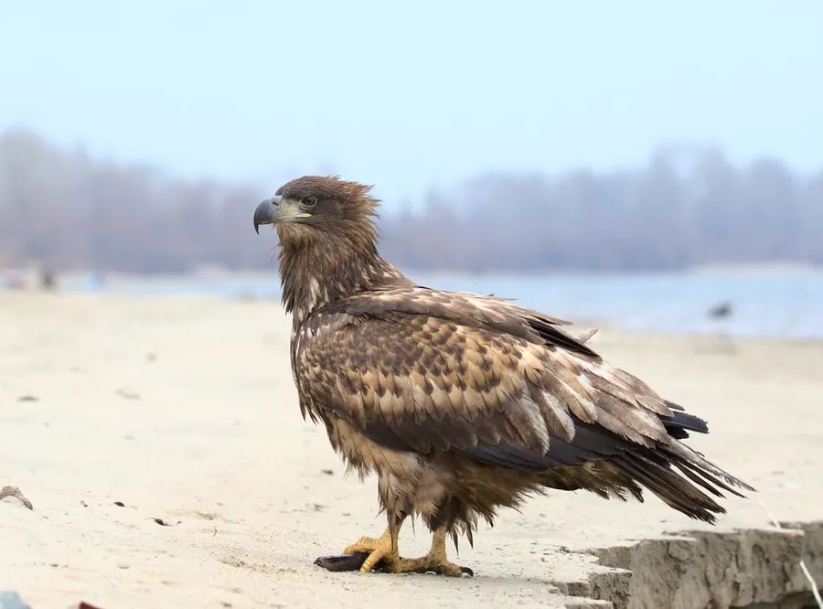

鸟类 · 动物界
白尾海雕 Haliaeetus albicilla

体形巨大的海雕，成鸟尾羽纯白、头颈淡黄，翼展可超 2 米，常在水边捕鱼或抢食，是欧洲最大的猛禽之一。
- 分类
- 门脊索动物门纲鸟纲目鹰形目科鹰科属海雕属
- 栖息环境
- 沿海、湖泊、河流、水库与湿地，巢多筑于悬崖或高大乔木
- 地理分布
- 欧洲、亚洲北部和格陵兰，中国东北、华北、新疆和青藏高原可见
- 保护级别
- IUCN 无危（LC）；中国国家一级保护动物
物种志
白尾海雕体长 74–100 cm，体重 3–7 kg，翼展 200–245 cm，是体形巨大的猛禽。成鸟通体深褐色，尾羽纯白呈楔形，头部和颈部呈淡黄白色，喙粗壮而呈黄色；幼鸟尾羽灰色，体色较浅并带斑驳。它的翅膀宽大，飞行时翼指明显。
白尾海雕分布于欧洲、亚洲北部和格陵兰的沿海、湖泊和河流，中国东北、华北、新疆和青藏高原均有分布或越冬记录。它们以鱼、水鸟、野兔和腐肉为食，常在湖泊和海岸上空盘旋，也会抢夺其它鸟类的猎物。繁殖期在悬崖或高大乔木上筑大型巢，每窝产卵 1–3 枚，孵化约 35–40 天。由于历史上遭到大量捕杀和农药污染，欧洲部分种群一度濒危，经过保护后逐渐恢复，目前被列为无危物种，中国将其列为国家一级保护动物。
形态与习性
- 食性鱼、水鸟、野兔和腐肉
- 体长74–100 cm
- 体重3–7 kg
- 翼展200–245 cm
- 繁殖每窝 1–3 枚卵，孵化约 35–40 天
- 寿命野外约 20–25 年
- 尾羽成鸟尾羽纯白呈楔形
趣味知识
- 白尾海雕成鸟的尾羽纯白，是它名字的由来。
- 它是欧洲最大的猛禽之一，翼展可超过 2 m。
- 白尾海雕常在水面上空盘旋，也会抢夺鹗抓到的鱼。
- 经过多年保护，一度濒危的欧洲白尾海雕种群已逐渐恢复。